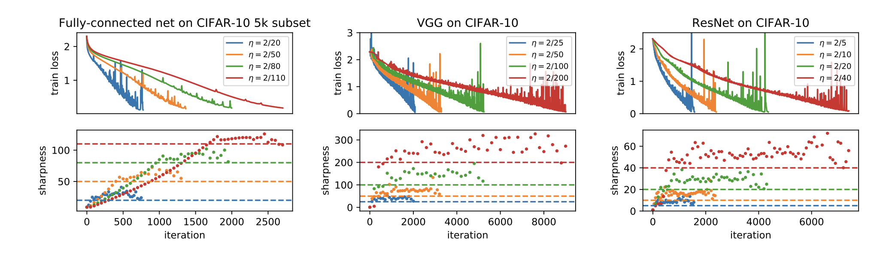
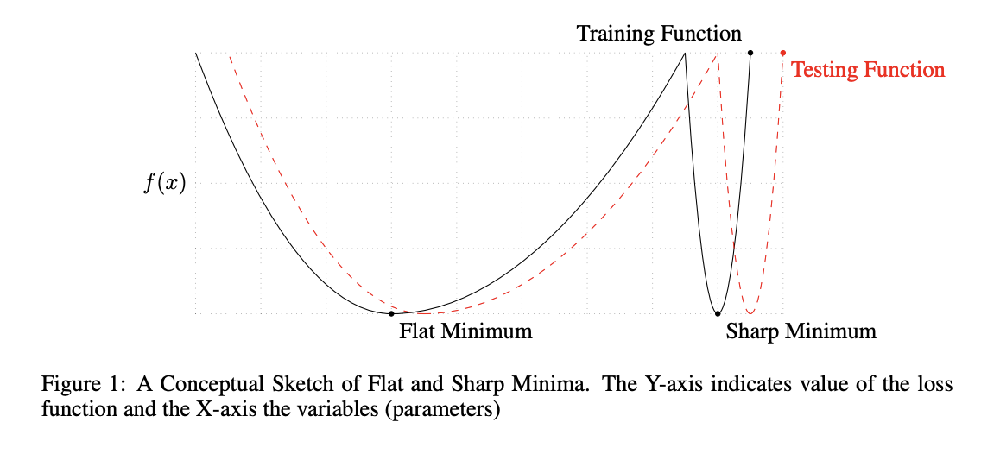
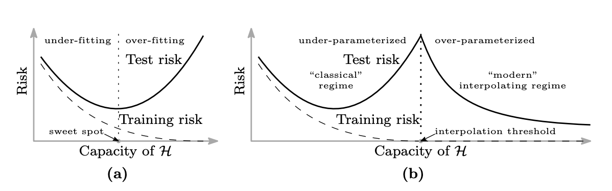
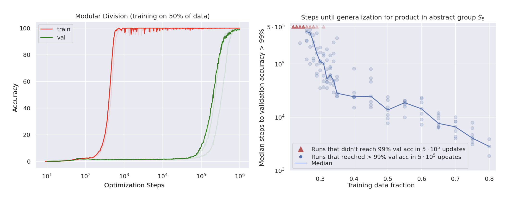

Understanding optimization dynamics, loss landscapes, and surprising generalization behaviors
Stochastic Methods in Machine Learning: AGH
The gradient $\nabla L$ points in the direction of steepest ascent. Moving in the negative gradient direction gives steepest descent: the fastest local decrease of the loss.
Too large → overshoots minimum, may diverge
Too small → very slow convergence
Click anywhere on the contour plot to place a starting point
Sharpness is measured as the largest eigenvalue of the Hessian $\lambda_{\max}(\nabla^2 L)$. Classical theory says GD converges only when $\lambda_{\max} < 2/\eta$.
Unlike most analyses, this paper studies deterministic gradient descent (full batch). The surprising behaviors arise without stochastic noise: they are intrinsic to the optimization landscape of neural networks.
Classical convergence guarantees assume sharpness stays below $2/\eta$ throughout training. In practice, GD self-tunes to violate this assumption: it operates right at the stability boundary. This means standard theoretical results do not explain why GD works on neural networks.

Top row: train loss. Bottom row: sharpness $\lambda_{\max}$. Dashed lines show $2/\eta$ stability thresholds for each learning rate.
Jastrzebski, Kenton, Arpit, Ballas, Fischer, Bengio & Storkey, 2018
The noise scale (effective temperature) of SGD is $\eta / S$ (learning rate / batch size). Only this ratio matters, not individual values!
| Factor | Effect |
|---|---|
| Learning rate $\eta$ | Higher → more noise, wider minima |
| Batch size $S$ | Smaller → more noise, wider minima |
| Gradient covariance | Determines noise structure (anisotropic) |
Keskar, Mudigere, Nocedal, Smelyanskiy & Tang, 2017
Large batches achieve similar training accuracy but up to 5% worse test accuracy. Why?
Measures how much loss can increase in a neighborhood. Sharp minima → high $\phi$.

Belkin et al., 2019: "Reconciling modern ML practice and the bias-variance trade-off"
Bias-variance trade-off predicts a U-shaped test error curve: underfitting → sweet spot → overfitting. But modern overparameterized models defy this!
| Regime | Description |
|---|---|
| Under-param. $(p < n)$ |
Classical U-shape. More params reduce bias, eventually increase variance. |
| Interpolation $(p \approx n)$ |
Model barely fits all training data: maximally jagged, highest test error. |
| Over-param. $(p \gg n)$ |
Many interpolating solutions exist. Optimizer's implicit bias selects smoother ones: test error decreases again. |

Power, Burda, Edwards, Babuschkin & Misra, 2022
Weight decay is essential for grokking. Without it, the model memorizes but never generalizes. It acts as regularization pressure, pushing the network from memorization toward discovering true algebraic structure.
Generalization can happen long after memorization. Conventional early stopping would miss it entirely. Challenges the view that memorization and generalization are competing alternatives at similar training times.

"Overfitting is when the model memorizes the training data instead of learning the underlying pattern. It happens when the model is too complex. The solution is to use regularization, early stopping, or reduce model size."
"The classical view says more parameters inevitably leads to overfitting, but modern deep learning shows this isn't the full picture: